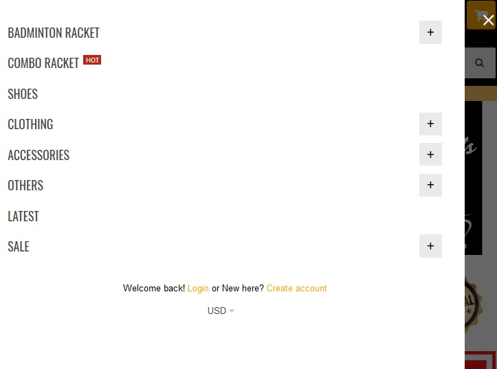
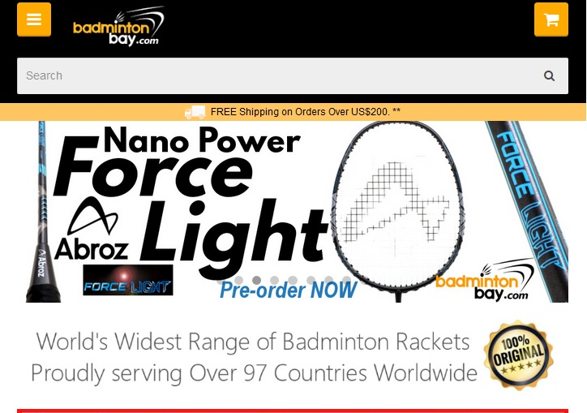
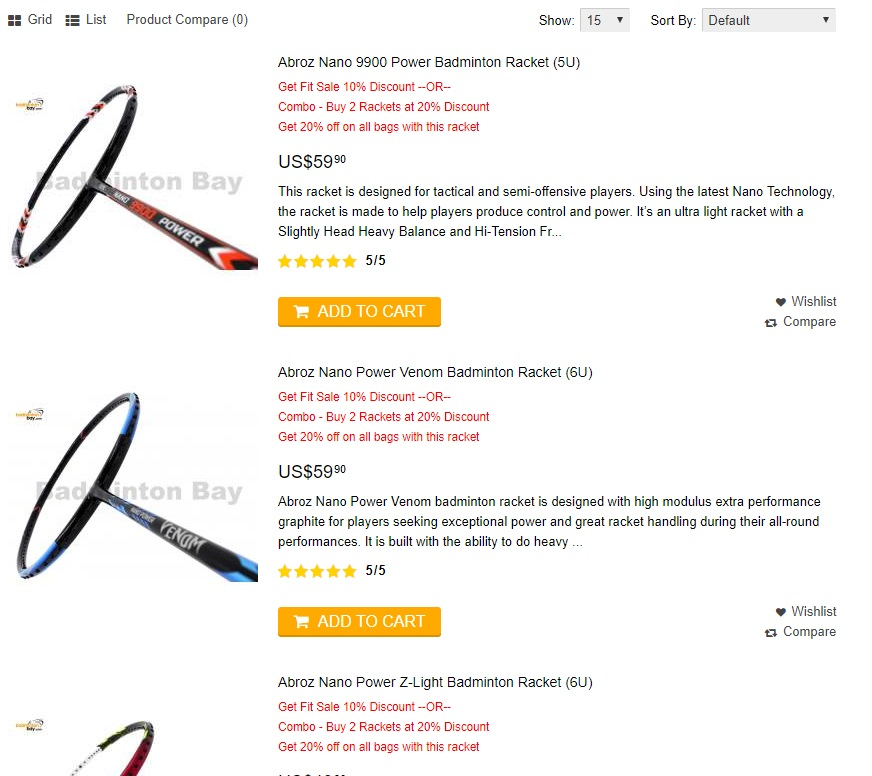
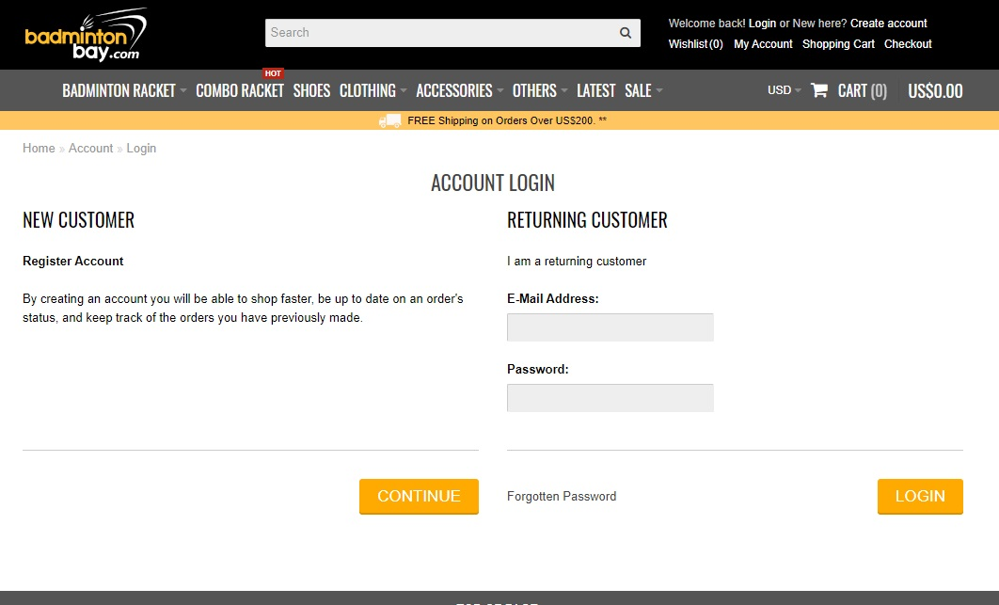
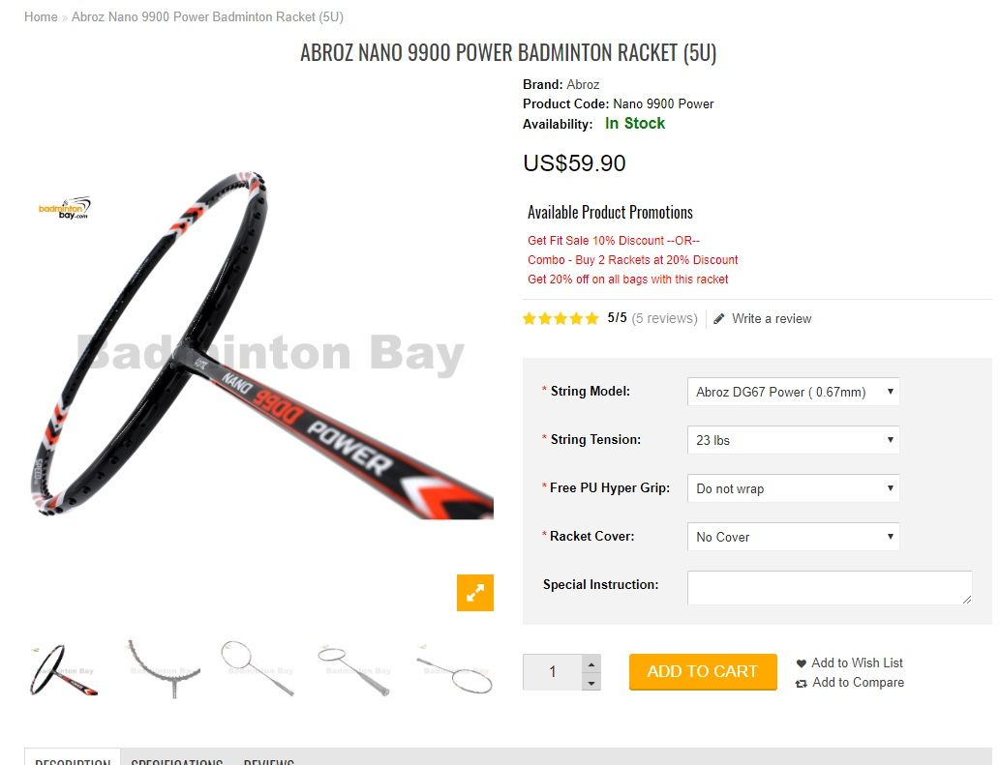

The purpose of this site is to review the website Badminton Bay to see how it's webpage response to different screen/media size and how the content are displayed and how the user interface is.

The navigation is effective the links works and leads you to the page that you click on. The information is organized with the horizontal navigation bar with title of each subject. It has a search bar for you to search to find what you are looking for. The site also has a site map which looks very organize and easy to follow/read.

Each page format is very similar to each other so makes it easy to follow. Each row is an item and has a description of what it is. The color scheme is a little plain. It has images of the item on a white background. There are no distracting ads. There is one thing that is distracting is the chat bar that keep popping up instead of having just the icon.

The design fulfills the functionality of the content intended for the user. It displays what the item is and if the user clicks on it, it leads to a more detail page describing the product. It has an add to cart button so user can add the item to their cart if they want to buy it.

They have an account you can set up and login so that it can remember the items in your cart and your billing information so that you do not have to type all the info in again.

Some suggestive improvement would be the chat box keep popping up full so it’s a distracting even though it does not cover up anything. Another improvement would be the alternating background color between the row so the user can differentiate between rows. Also, the add the cart button leads to the page with more info because the user has to choose more option. If there was a pop up that let user choose the choices it would be nice and instantly add to cart.